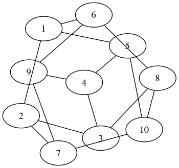

Cookin' with Rust
A practical guide to the Rust crate ecosystem.
Recipes


Contributing
If you'd like to make changes to the project, please see this guide.
License
MIT/Apache-2.0
A note about error handling
Error handling in Rust is robust when done correctly, but in today's
Rust it requires a fair bit of boilerplate. Because of this one often
sees Rust examples filled with unwrap calls instead of proper error
handling.
Since these recipes are intended to be reused as-is and encourage best practices, they set up error handling correctly, and when necessary to reduce boilerplate, they use the [error-chain] crate.
The code for this setup generally looks like:
#[macro_use]
extern crate error_chain;
mod errors {
error_chain! {
foreign_links {
Io(::std::io::Error);
}
}
}
use errors::*;
fn main() { run().unwrap() }
fn run() -> Result<()> {
use std::io::Write;
let ref mut stdout = ::std::io::stdout();
writeln!(stdout, "hello, world")?;
Ok(())
}
This is using the error_chain! macro to define a custom Error
and Result type, along with an automatic conversion from
the common ::std::io::Error type. The automatic conversion
makes the ? operator work
For more background on error handling in Rust, read this page of the Rust book and this blog post.
Math
rand
Random number generators and other randomness functionality

Example: Monte carlo integration
Use the rand crate to generate random samples and approximate
$\int_{0}^{\pi} sin(x) dx$ using monte carlo.
Key concepts:
- Creating thread-specific RNG
- Generating real numbers over an interval
extern crate rand;
use rand::Rng;
use std::f32;
/// f(x) = sin(x)
fn f(x: f32) -> f32 {
x.sin()
}
/// Compute integral of f(x) dx from a to b using n samples
fn monte_carlo(a: f32, b: f32, n: u32) -> f32 {
// Generate numbers specific to this thread
let mut rng = rand::thread_rng();
let mut samples: Vec<f32> = Vec::new();
// Generate n samples between [a, b)
for _ in 0..n {
samples.push(rng.gen_range(a, b));
}
// Find function values
let mut sum = 0.;
for x in samples {
sum += f(x);
}
// Returns average of samples over interval
(b - a) / n as f32 * sum
}
fn main() {
let actual = 2.0;
let estimate = monte_carlo(0., f32::consts::PI, 200_000);
let rel_err = (estimate - actual).abs() / actual;
assert!(rel_err < 10e-3);
println!("estimate: {} rel_err: {}", estimate, rel_err);
}
Example: Generating random RGB colors
A trait is a language feature that tells the Rust compiler about functionality a type must provide.
Rust has the powerful ability to create traits for your own types.
One example is rand::Rand. Any type that implements Rand can use the
polymorphic function Rng::gen() to generate random types.
Key concepts:
- Generating a random structure
extern crate rand;
use rand::Rng;
use rand::Rand;
#[derive(Debug)] // Allows us to print using {:?} format specifier
struct Color { // RGB Color struct
r: f64,
g: f64,
b: f64,
}
// Implementing Rand for type Color
impl Rand for Color {
fn rand<R: Rng>(rng: &mut R) -> Self {
Color {r: rng.next_f64(), b: rng.next_f64(), g: rng.next_f64()}
}
}
fn main() {
// Generate a random Color and print to stdout
let mut rng = rand::thread_rng();
let c: Color = rng.gen();
println!("{:?}", c);
}
petgraph
graph data structure library

Example: Drawing the Petersen Graph
petgraph has powerful features for graph representation and algorithms.
In the example below, we create and draw a graph in dot format.
Key concepts:
- Creating graphs from vertices and edges
- Printing in human readable form
extern crate petgraph;
use petgraph::Graph;
use petgraph::dot::{Dot, Config};
fn main() {
// Create a new undirected graph, g
let mut g = Graph::<u32, u32, petgraph::Undirected>::new_undirected();
let w = 0;
let mut v = Vec::new();
// Add 10 vertices to G
for i in 1..11 {
v.push(g.add_node(i));
}
// Connect with 15 edges
for i in 0..4 {
g.add_edge(v[i], v[i + 1], w);
g.add_edge(v[i], v[i + 5], w);
}
g.add_edge(v[0], v[4], w);
g.add_edge(v[4], v[9], w);
g.add_edge(v[5], v[7], w);
g.add_edge(v[5], v[8], w);
g.add_edge(v[6], v[8], w);
g.add_edge(v[6], v[9], w);
g.add_edge(v[7], v[9], w);
// Print in graphviz dot format
println!("{:?}", Dot::with_config(&g, &[Config::EdgeNoLabel]));
}

Parallel Prime Calculations

Calculate primes upto a number
/**
* Simple parallel programming example,
* calculating all primes less than n
* using sieve of erastonthes algorithm.
*/
extern crate crossbeam;
// Basic implementation of Sieve of Erastonthes
fn eratosthenes(mut primes: Vec<bool>, n: usize) {
let limit = (n as f64).sqrt() as usize;
for i in 2..limit {
if primes[i] == true {
let mut j = 2*i;
while j < n {
primes[j] = false;
j += i;
}
}
}
}
// Parallel implementation of Sieve of Erastonthes
fn parallel_eratosthenes(mut primes: Vec<bool>, n: usize) {
let limit = (n as f64).sqrt() as usize;
// For all numbers between i and sqrt(n),
// Look for all 'true' and report multiples
// as false.
for i in 2..limit {
if primes[i] == true {
let mut j = 2*i;
// Using crossbeam's scoped thread implementation
crossbeam::scope(|scope| {
scope.spawn(|| {
while j < n {
primes[j] = false;
j += i;
}
});
});
}
}
}
fn main() {
// We shall calculate all primes up to 100
let num = 100;
// First, we create an array of size num,
// with all values except the first set to true
let mut primes = vec![true; num];
primes[0] = false;
primes[1] = false;
let par_primes = primes.clone();
eratosthenes(primes, num);
parallel_eratosthenes(par_primes, num);
}
This code above uses the Sieve of Erastonthes algorithm to calculate all primes up to the value passed to it. This is done using two separate implementations of the same algorithm, one with a single-threaded function and another using the Scope struct from the crate crossbeam. The purpose of this is to show the strength of the Scope struct, as a way to allow for threads to spawn with data shared with their parents.
Algorithms
File I/O Example
Uses Rust's fs::File library to do simple file reading and writing operations
/**
* Simple file I/O and operations.
*/
// File operations
use std::io;
use std::io::prelude::*;
use std::fs::File;
fn operate_on_file(myfile: &str, mystring: &str, count: i32) -> io::Result<()> {
// Try to open file
let mut f = try!(File::open(myfile));
// Write entire mystring buffer to file 'count' times
let mut c = 0;
while c < count {
try!(f.write_all(mystring.as_bytes()));
c += 1;
}
// Read lines from file
for line in io::BufReader::new(&f).lines() {
println!("{}", line.unwrap());
}
Ok(())
}
fn main() {
let myfile = "input.txt";
let mystring = "My favorite string! <3";
let count = 10;
match operate_on_file(&myfile, &mystring, count) {
Ok(()) => { return; },
Err(_) => { println!("File operations failed!")},
};
}
The above program is a simple example of how to write and read to a file.
Clap Example

Parse values passed to the program through command line
/**
* An example of commandline argument parsing, with
* focus on using the clap library tools.
*/
// Argument parsing
extern crate clap;
use clap::{Arg, App};
fn main() {
// Set command line arguments
let matches = App::new("My Test Program")
.version("0.0.1")
.author("Hackerman Jones <hckrmnjones@hack.gov>")
.about("Teaches argument parsing")
.arg(Arg::with_name("file")
.short("f")
.long("file")
.value_name("FILE")
.help("A cool file")
.takes_value(true))
.arg(Arg::with_name("input_string")
.short("i")
.help("Your favorite phrase")
.multiple(true)
.takes_value(true)
.index(1))
.arg(Arg::with_name("count")
.short("c")
.long("count")
.takes_value(true)
.help("5 less than your favorite number"))
.get_matches();
// Gets value for file, or defaults to 'input.txt'
let myfile = matches.value_of("file").unwrap_or("input.txt");
println!("The file passed is: {}", myfile);
// Gets value for input string, simple unwrap is safe,
// as this arg was required
let mystring = matches.value_of("input_string").unwrap_or("");
println!("The string passed is: {}", mystring);
// Gets value for count, default to 0, then convert to int
let count_string = matches.value_of("count").unwrap_or("0");
let mut count = count_string.parse::<i32>().unwrap_or(0);
count += 5;
println!("The value of the number passed plus 5 is: {}", count);
}
The purpose of this is to display the raw power of the clap library, an extensive command line argument parser for Rust. First, the user writes a description for their App, given a version, author, and about string.
The next step involves describing the args that clap can expect. 'with_name' is the option or argument descriptor that 'value_of' uses to get the value passed. 'short' and 'long' sets the version to be passed with characters '-' and '--', respectively, through the command line. 'value_name' is simply cosmetic, and is NOT used in getting any actual values. 'help' allows the user to describe what the argument is used for or what the argument expects. If 'takes_value' is set to true, it will expect the argument to take a value, such as a string, filename, or number, as in the example above. For more examples of usage and a description of what clap is capable of, please visit their wiki.
We can test this program by running command similar to the following:
cargo run -- -f myfile.txt -i "I <3 Rust!!!" --count 6
> The file passed is: myfile.txt
> The string passed is: I <3 Rust!!!
> The value of the number passed plus 5 is: 11
Byteorder

Read and write integers in little-endian byte order
extern crate byteorder;
use std::io::Cursor;
use byteorder::{LittleEndian, ReadBytesExt, WriteBytesExt};
#[derive(Default, Eq, PartialEq, Debug)]
struct Payload {
kind: u8,
value: u16,
}
fn run() -> Result<()> {
let original_payload = Payload::default();
let encoded_buf = encode(&original_payload)?;
let decoded_payload = decode(&encoded_buf)?;
assert_eq!(original_payload, decoded_payload);
Ok(())
}
fn encode(payload: &Payload) -> Result<Vec<u8>> {
let mut wtr = vec![];
wtr.write_u8(payload.kind)?;
wtr.write_u16::<LittleEndian>(payload.value)?;
Ok(wtr)
}
fn decode(buf: &[u8]) -> Result<Payload> {
let mut rdr = Cursor::new(buf);
Ok(Payload {
kind: rdr.read_u8()?,
value: rdr.read_u16::<LittleEndian>()?,
})
}
#[macro_use]
extern crate error_chain;
mod errors {
error_chain! {
foreign_links {
Io(::std::io::Error);
}
}
}
use errors::*;
fn main() { run().unwrap() }
JSON

JSON implementation in Rust:
The example below shows two simple ways to embed JSON in Rust.
The first method parses block JSON as a block using the parse method from the json crate. It then unwraps the parsed JSON.
The second method instantiates an object as JSON using the object macro. Key value relationships are easily set using =>.
After demonstrating two simple ways to write JSON, the assert_eq! macro ensures equivalence.
#[macro_use]
extern crate json;
fn main(){
let parsed_data = json::parse(r#"
{
"userid": 103609,
"verified": true,
"access_privelages": [
"user",
"admin"
]
}
"#).unwrap();
let instantiated_data = object!{
"userid" => 103609,
"verified" => true,
"access_privelages" => array![
"user",
"admin"
]
};
assert_eq!(parsed_data, instantiated_data);
}
License
MIT/Apache-2.0
TOML

Parse TOML into a toml::Value and then operate on it:
extern crate toml;
fn main() {
let toml_source = "
[package]
name = \"your package!\"
version = \"0.1.0\"
authors = [\"You! <you@example.org>\"]
[dependencies]
cool = \"0.2.1\"";
let package_info = toml_source.parse::<toml::Value>().unwrap();
assert_eq!(package_info["dependencies"]["cool"].as_str(), Some("0.2.1"));
assert_eq!(package_info["package"]["name"].as_str(), Some("your package!"));
}
Parse TOML into your own structs using the serde crate:
extern crate toml;
#[macro_use]
extern crate serde_derive;
extern crate serde;
#[derive(Deserialize)]
struct Config {
package: Package,
dependencies: std::collections::HashMap<String, String>,
}
#[derive(Deserialize)]
struct Package {
name: String,
version: String,
authors: Vec<String>,
}
fn main() {
let toml_source = "
[package]
name = \"your package!\"
version = \"0.1.0\"
authors = [\"You! <you@example.org>\"]
[dependencies]
cool = \"0.2.1\"";
let package_info : Config = toml::from_str(toml_source).unwrap();
assert_eq!(package_info.package.name, "your package!");
assert_eq!(package_info.package.version, "0.1.0");
assert_eq!(package_info.package.authors, vec!["You! <you@example.org>"]);
assert_eq!(package_info.dependencies["cool"], "0.2.1");
}
License
MIT/Apache-2.0
Networking
Contributing to the Rust Cookbook
Have something useful to add to the Rust Cookbook? We'd love to have it!
This document contains information and guidelines that you should read before contributing to the project. If you think something in this document should change, feel free propose a change in a pull request.
Table of Contents
Getting Started
TODO: Mention Trello and how to join (if we keep using it)
How to Contribute
TODO: Reporting bugs
TODO: Project page suggestions
TODO: Fixing bugs
TODO: Pull requests
Crates
TODO: How to add new crates to project
Tests
TODO: Write about writing tests
Style
https://aturon.github.io
Git Commit Messages
https://chris.beams.io/posts/git-commit/
TODO: Possibly take relevant parts from this post or write our own
Snippet Style
TODO: Talk about writing good idiomatic code
TODO: Maybe provide a template?